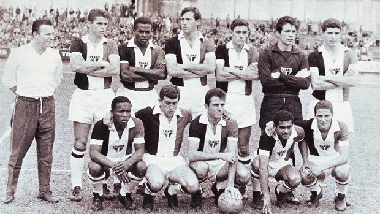

O tricolor paulista surgiu através da fusão de dois antigos clubes: o Paulistano, grande campeão no início do século XX e a Associação Atlética das Palmeiras, que se uniram em 1930 dando origem ao Clube Athlético São Paulo ou São Paulo da Floresta, como muitos o chamavam.
